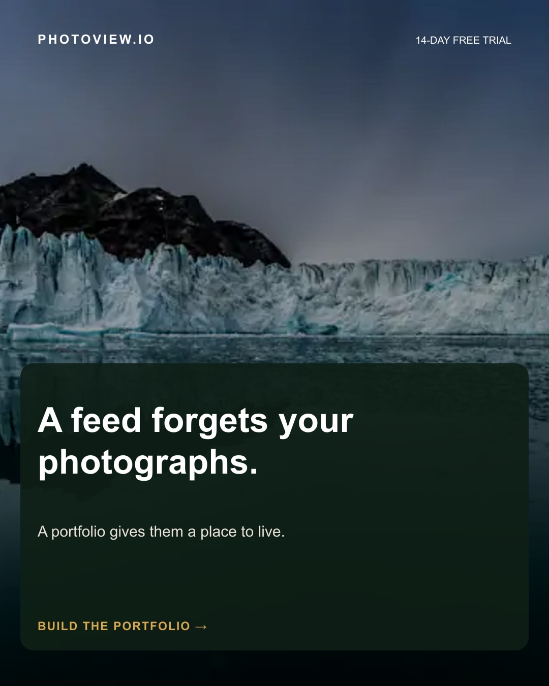

photoview-launch-01
A feed forgets your photographs.
A feed forgets your photographs.
A portfolio gives them a place to live.
Your photographs deserve a destination, not an expiration date.
Explore PhotoView.io: https://photoview.io/?utm_source=organic_social&utm_medium=social&utm_campaign=photoview_30_day_launch&utm_content=feed-forgets
#PhotographyPortfolio #PhotographerWebsite #PhotoViewIO #PhotographyBusiness